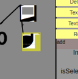

Visual programming tool for experimenting with parse trees. Scratch is
a children's toy for learning to code; Max/MSP exists to let you avoid coding;
Flows is for parse-tree monkeying.
Start --
Github

Level editing? Vector drawing, sorta? Like that thing I made that time.
Data for node editor? For sure, it's pretty good with tile sets.
Start